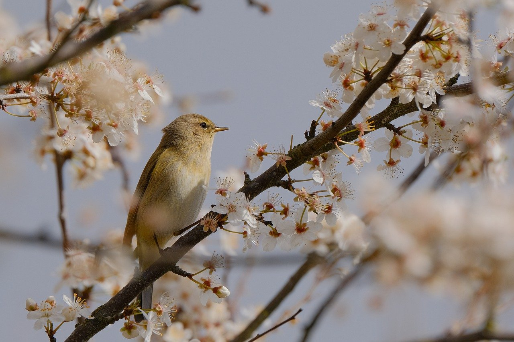
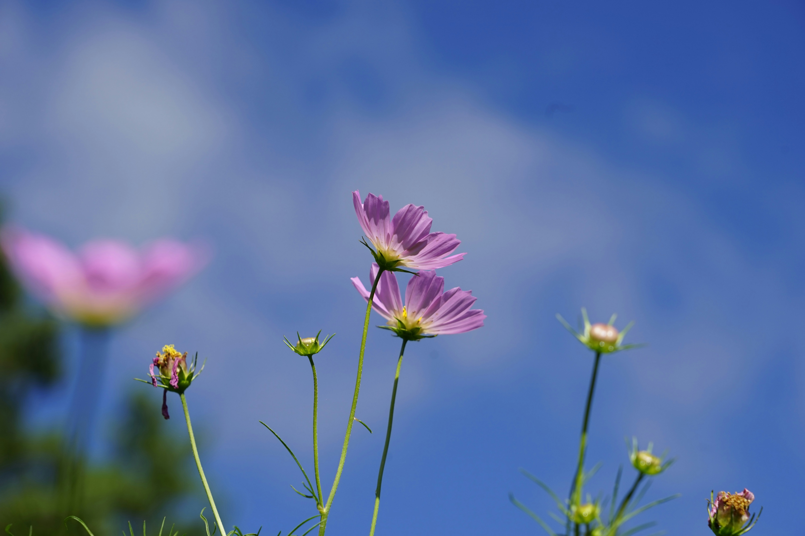

As popularly used, the term “flower” especially applies when part or all of the reproductive structure is distinctive in colour and form. petunia Pink variegated flowers of a common garden petunia (Petunia ×atkinsiana).
They range in size from minute blossoms to giant blooms. In some plants, such as poppy, magnolia, tulip, and petunia, each flower is relatively large and showy and is produced singly, while in other plants, such as aster,

Basically, each flower consists of a floral axis upon which are borne the essential organs of reproduction (stamens and pistils) and usually accessory organs (sepals and petals); the latter may serve to both attract .

The floral axis is a greatly modified stem; unlike vegetative stems, which bear leaves, it is usually contracted, so that the parts of the flower are crowded together on the stem tip, the receptacle. The flower parts are usually .